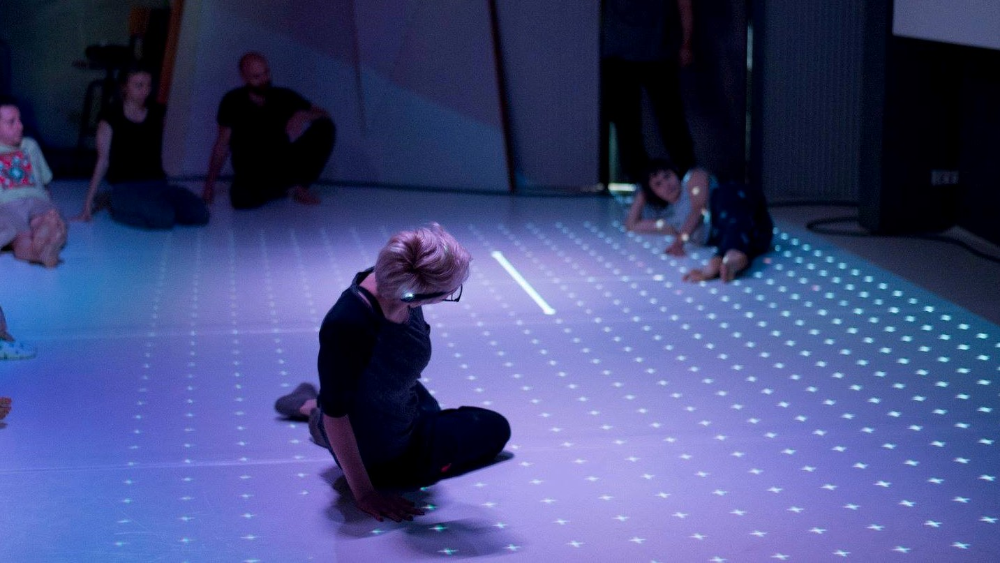

Calendar
Ito En: XM-Profiler (Japan; December, 2018 - ongoing)
Temps d'Images (Germany; January 15 - 25, 2019)
Processing Community Day 2019 Tokyo (Japan; February 2, 2019)
Choreographic Coding Lab (Germany; April 28 - May 2, 2019)
About
danceWEB Scholarship - mentored by Tino Sehgal (2016)
Master of Engineering -
Shared Reality Lab, McGill University (2012 - 2015)
Bachelor of Engineering - Munekata Group, Tokyo Institute of Technology (2008 - 2012)
2012-2019 Naoto Hieda